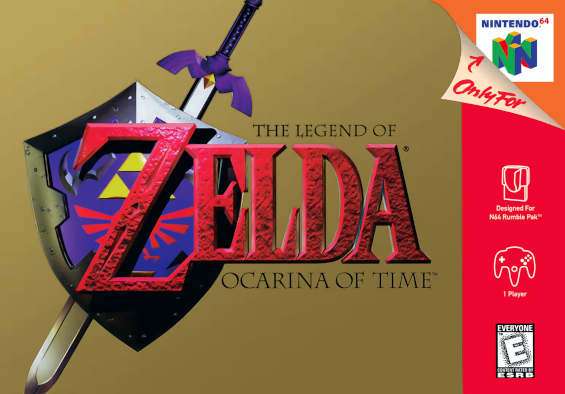
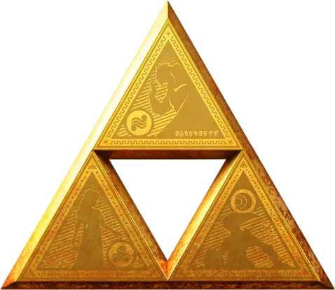
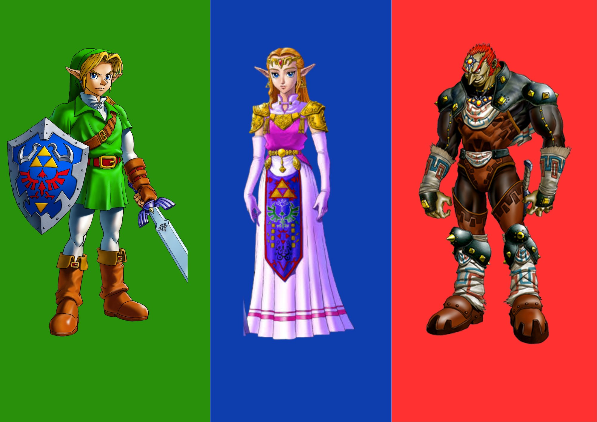

Diminua a janela do navegador para ver o efeito de responsividade.
The Legend of Zelda
Um site de fã sobre a série, com layout responsivo.
A LENDA DE ZELDA
Uma das séries mais queridas dos videogames

Como tudo começou
The Legend of Zelda foi criada por Shigeru Miyamoto e Takashi Tezuka, da Nintendo.
O primeiro jogo chegou ao Japão em 1986 e apresentou ao mundo a ideia de explorar
um grande mapa, descobrir itens e resolver enigmas. Desde então, a série ganhou
jogos para quase todos os consoles da empresa, de aventuras em visão aérea a
mundos abertos em 3D, como Breath of the Wild e Tears of the Kingdom.
A TRIFORCE
O símbolo mais famoso da série

Poder, Sabedoria e Coragem
A Triforce é formada por três triângulos dourados, que representam o Poder,
a Sabedoria e a Coragem. Na história da série, ela é uma relíquia sagrada capaz de
realizar desejos, e por isso muita gente tenta se apoderar dela.
PERSONAGENS
Os nomes que você mais vai ouvir

Link, Zelda e Ganon
Link é o herói, quase sempre silencioso, que empunha a Master Sword.
Zelda é a princesa de Hyrule e costuma ter papel decisivo na história.
Ganon, ou Ganondorf, é o grande vilão que ameaça o reino. Cada jogo conta
uma nova versão dessa lenda, por isso os personagens mudam de aparência, mas
mantêm o mesmo espírito.